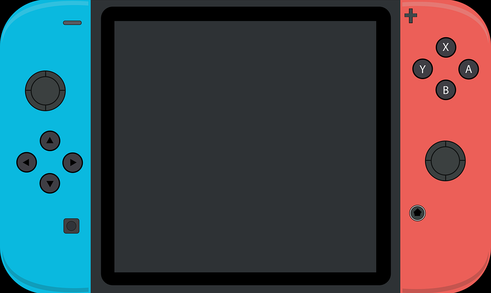
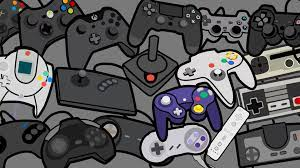
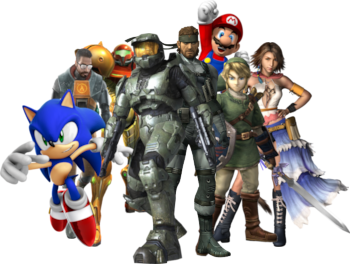

En este blog hablaré acerca de si los videojuegos son un deporte.
Desarrollo
Si se toma en cuenta que la Real Academia Española (RAE, s.f.) define la palabra 'deporte'
como “actividad física, ejercida como juego o competición, cuya práctica supone
entrenamiento y sujeción a normas”, entonces los videojuegos sí tendrían que ser
considerados un deporte.
Motivación
Mi Motivación para realizar este blog es mi gusto por los videojuegos.
Videojuego
Ranking
12/11/2021
Top 10 videojuegos
Se realizará un top de los 10 videojuegos más populares.
Mario Party
Pokémon
Minecraft
The Legend of Zelda
Just Dance
Animal Crossing
Mario Kart
Metroid
Super Mario Odyssey
Fifa

Videojuegos
Sitios oficiales
12/11/2021
5 sitios oficiales de videojuegos
Se realizará un listado con links a páginas de videojuegos.
Yo agregaría que los videojuegos, aparte de ser considerados un deporte, ayudan al desarrollo
del intelecto.
Yo creo que el video está muy bien hecho y explicado.
16/02/2022
Problemas con videojuegos
Hay aspectos a los que las familias tienen que estar atentas con los videojuegos. Algunos
niños tienen problemas para dejar de jugar o cambiar de actividad. Otros tienen cambios de
humor durante o después de jugar, o están hiperenfocados (concentrados en exceso). Y hay
niños que son reservados o están obsesionados con los videojuegos. Sin embargo, también
tienen algunas ventajas.1
Los estudios sugieren que las habilidades lectoras de los niños que juegan videojuegos
pueden mejorar ligeramente. También parece ser cierto en los niños que tienen dificultad
para leer, e incluso cuando se trata de juegos de acción.1
Muchos juegos, como Minecraft, se desarrollan en escenarios virtuales en 3D que los niños
tienen que recorrer. Y no hay un GPS o una app que los guíe.1
Antes se jugaba a las canicas, el pañuelo, el escondite, la rayuela, la comba, la peonza o
las tabas, entre otros. Hoy en día, la realidad es muy distinta. Llegó la era de los
videojuegos y parece que para quedarse.1
Cuestionando a los videojuegos
Pero, ¿es bueno o es malo? Lo cierto es que jugar a videojuegos tiene sus ventajas y sus
desventajas, pero con moderación y sabiendo hacer buen uso de ellos, podríamos decir que sí,
que jugar a videojuegos es bueno.2
Aunque la verdadera desventaja que preocupa a padres y docentes, sobre todo en el caso de
los más pequeños, es que los videojuegos pueden provocar rechazo a otro tipo de material
didáctico como los libros o simplemente al contacto con el aire libre y a los juegos
fuera de casa, y que a su vez cuentan con otra serie de ventajas que no tienen los
videojuegos, como jugar con otros niños y desarrollar habilidades
sociales.2
Durante bastante tiempo ha sido complicado señalar cual fue el primer videojuego,
principalmente debido a las múltiples definiciones de este que se han ido estableciendo,
pero se puede considerar como primer videojuego el Nought and crosses, también llamado
OXO, desarrollado por Alexander S.Douglas en 1952.2
Un hito importante en el inicio de los videojuegos tuvo lugar en 1971 cuando Nolan
Bushnell comenzó a comercializar Computer Space, una versión de Space War, aunque otra
versión recreativa de Space War como fue Galaxy War puede que se le adelantara a
principios de los 70 en el campus de la universidad de Standford.}2
Versiones de videojuegos
Los años 80 comenzaron con un fuerte crecimiento en el sector del videojuego alentado por la
popularidad de los salones de máquinas recreativas y de las primeras videoconsolas
aparecidas durante la década de los 703
Muchos juegos, como Minecraft, se desarrollan en escenarios virtuales en 3D que los niños
tienen que recorrer. Y no hay un GPS o una app que los guíe.3
Pero, ¿es bueno o es malo? Lo cierto es que jugar a videojuegos tiene sus ventajas y sus
desventajas, pero con moderación y sabiendo hacer buen uso de ellos, podríamos decir que
sí, que jugar a videojuegos es bueno.
Aunque la verdadera desventaja que preocupa a padres y docentes, sobre todo en el caso
de los más pequeños, es que los videojuegos pueden provocar rechazo a otro tipo de
material didáctico como los libros o simplemente al contacto con el aire libre y a los
juegos fuera de casa, y que a su vez cuentan con otra serie de ventajas que no tienen
los videojuegos, como jugar con otros niños y desarrollar habilidades sociales.
3
Hay aspectos a los que las familias tienen que estar atentas con los videojuegos. Algunos
niños tienen problemas para dejar de jugar o cambiar de actividad. Otros tienen cambios de
humor durante o después de jugar, o están hiperenfocados (concentrados en exceso). Y hay
niños que son reservados o están obsesionados con los videojuegos. Sin embargo, también
tienen algunas ventajas.3

 JC Compu
JC Compu